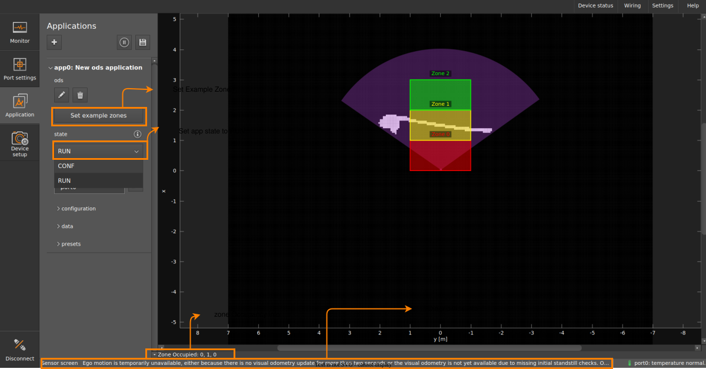

Configuring and activating an application
Depending on the O3C hardware, firmware, and included license, different ifm
applications are available in the ifmVisionAssistant. An application can be
created, configured, and monitored from the Application menu.
Note
The available applications and parameters depend on the connected O3C and its license. If an expected application is not listed, verify the device model, firmware version, and license with the responsible ifm contact.
Open the application screen
Select Application in the ifmVisionAssistant. The application screen lists
the applications available for the connected O3C and provides access to their
configuration and runtime data.


Create and activate an application
Open the
Applicationmenu.Select + and choose the required application.
Assign the required camera ports when prompted.
Set the application to
CONFbefore changing parameters that require configuration state.Configure the application parameters and apply the changes.
Set the application to
RUNto start processing and data output.
The application screen then displays the data provided by the application, such as occupancy grid for ODS application. The exact data depends on the selected application and its configuration.
For ODS, configure the application according to the ODS configuration
documentation. ODS normally requires
the application to be in CONF while changing configuration parameters and in
RUN while processing data.
Verify the application
After switching the application to RUN, verify that:
the application state remains
RUNwithout an error;the assigned camera ports provide data; and
the application-specific output is displayed in the application screen.
If the application does not start, check the selected ports, required parameters, license, and diagnostic information. For details about changing parameters and application state transitions, see Changing parameters.
Warning
Changing a parameter in the ifmVisionAssistant does not necessarily save the configuration permanently. Confirm the change using the device configuration workflow before relying on it after a reboot.
